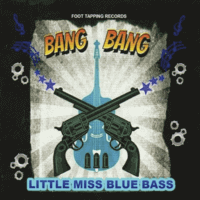

Little Miss Blue Bass - Bang Bang (Album, 2018)
01 - Buddy (2:43)
02 - Black Cadillac (2:21)
03 - Lucky Lips (2:15)
04 - Bang Bang (2:24)
05 - Black And White Thunderbird (2:21)
06 - Crazy Dreams (2:30)
07 - House Of The Rising Sun (3:05)
08 - Pledge Of A Fool (3:23)
09 - I Wish (You Could Of Turned Your Head) (3:31)
10 - Seven Lonely Days (2:08)
11 - Angel Of Love (2:29)
12 - Shake Rattle And Roll (2:47)
© Foot Tapping Records :: [FT186]
Notes
United Kingdom.
Little Miss Blue Bass - Vocal, Double Bass
Darrel Higham - Guitar
Lewis Jordan Brown - Piano
Eddie Gentry - Drums
reference information: Discogs®
Review
051/366 (Project 366)
An interesting album was created by Little Miss Blue Bass. But not only by her own majestic abilities, since the rest of the team not least influenced the features and value of the whole sound. Very well played. Harmonious and power sounding arrangement. All in all, perhaps, there is a unified and mutually supportive work in each track. But some first songs I did not think at all about double bass (concentrated on vocal, piano and guitars. With a strong pulsation by drums). Real party. Where piano just is as vigorous as vocal is hearty. Marvelous vocals of a stately grown woman. Not so frequent timbre in the songs that I heard on genre and style. At first it sounds peculiar, but it turns out to get used quickly and the motive floats pretty well. Sounds, in general, powerful and even somehow vintage. And sometimes - dramatically.
Almost all the songs on the album are cover versions or rehash of popular and famous songs. Quite fast paced of songs heats and stirs feelings. Especially how the album starts with invigorating and enticing tracks "Buddy" and "Black Cadillac". Further line of songs ("Lucky Lips", "Bang Bang", "Black and White Thunderbird", "Crazy Dreams") is pretty tuneful and dreamy a bit (where "Bang Bang" is a different and sounds extremely interesting, hot in tune and conceptually in the rest! And "Black and White Thunderbird" carries away the general flow in some kind of whirlwind. Where, in addition, voice is more gentle and slightly merry). This line is right before real rockin' action. Uh-oooh! Chomping performance by guitar (Darrel Higham) and even a little ballad tune of seventh song... good. Then song too positive in sound appears ("Pledge of a Fool" is even a bit twist), but not in its content! In fact, reminding a lot of populars and good oldies! From this track practically until last track the line of too melodious and lovely songs ("Pledge of a Fool", "I Wish (You Could of Turned Your Head)", "Seven Lonely Days", "Angel Of Love"). Sweet arangements, different lyrics, points out and points in. The last track is "Shake Rattle and Roll". Well-known and well end.
Album "Bang Bang", perhaps, with backtune of tastes for easy listening popular folk music into rockabilly and sweet rockin' sound. Cover art is about certain theme. So, maybe it is indeed partly honky sounding. Ultimately "Bang Bang" with good portion of Rockabilly despite its Rock'n'Roll taste and Vintage flavour.
In addition, I liked the abilities and skills of Darrel Higham. This album is probably not the most revealing. But, most likely, the album would sound completely different with another guitar player. And in a sense, the indescribable beauty of sound and accompaniment is just chic. However I have to write that piano was too impressive during listening and drummer with a quite powerful timing. Although no less I was impressed by the soloist. It is a wonderful Little Miss Blue Bass! I am really glad to listen her own solo album. The songs are smooth enough among themselves, although in a general sense they are quite diverse. Sound of the album has its own stylishness. This is creativity. Thing that makes the sound rattle. Mightily and sweet.